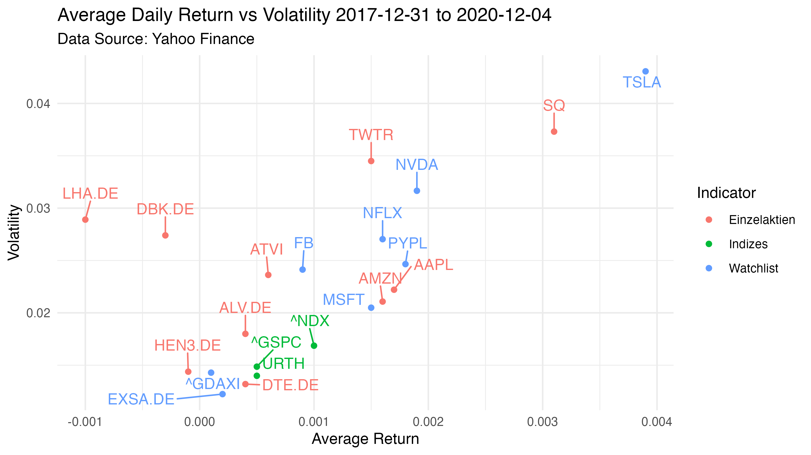
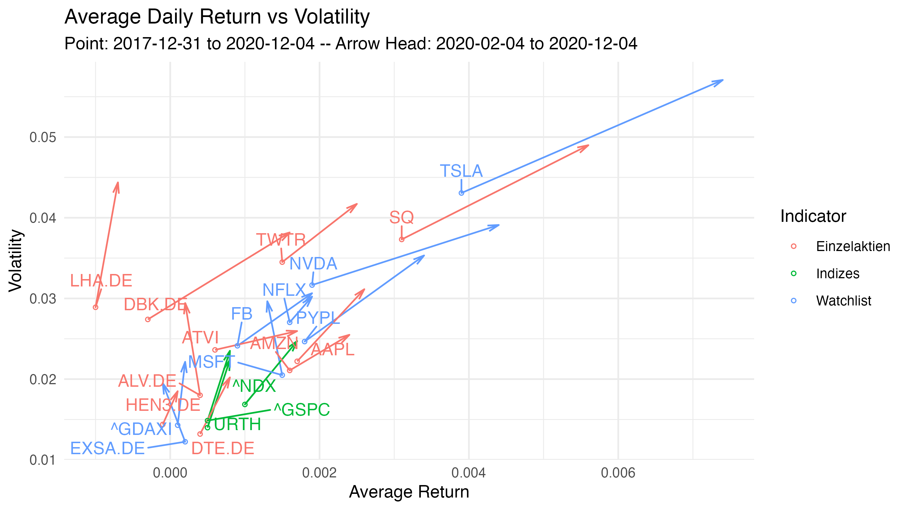

Vergleich.RmdDer Report besteht aus einer Analyse von Aktien, Indizes und ETFs mit dem R-Package tidyquant. Bei dem Aufbau der Seite wurde sich an dem Projekt von business-science orientiert.
Zunächst werden die Packages tidyverse und tidyquant geladen. Das Package tidyverse beinhaltet die dplyr und die ggplot Funktionen. Mit tidyquantwerden die Finanzanalysen durchgeführt.
# blanket import for core tidyverse packages
library(tidyverse)
# tidy financial analysis
library(tidyquant)Im nächsten Schritt werden Variablen für die weiteren Analysen erstellt. So werden die zu analysierenden Zeiträume definiert und die Aktien und Indizes bestimmt.
# Variablen
# save current system date to a variable
today <- Sys.Date()
# subtract 10 months from the current date - Datum ab dem die Kurse (Arrow Head) ausgewertet werden
date200_days <- today - months(10)
# Datum ab dem die Kurse (Point) ausgewertet werden
date <- "2017-12-31"
# Aktien, Indizes und Watchlist
aktien <- c("AMZN", "AAPL", "TWTR", "SQ", "ATVI", "DTE.DE", "DBK.DE", "LHA.DE", "ALV.DE","HEN3.DE")
indizes <- c("URTH", "^NDX", "^GSPC")
watchlist <- c("EXSA.DE", "^GDAXI", "TSLA", "MSFT", "FB", "NFLX", "NVDA", "PYPL")Danach werden mit der Funktion tq_get aus tidyquant Daten von Yahoo Finance geladen.
tickers_df <- tq_get(c(aktien, indizes, watchlist),
get = "stock.prices",
from = date,
to = today)
vergleich_df <- tq_get(c(aktien, indizes, watchlist),
get = "stock.prices",
from = date200_days,
to = today)Danch werden mit der Funktion tq_transmute die täglichen Returns der adjusted Werte gebildet.
daily_sector <- tickers_df %>% group_by(symbol) %>%
tq_transmute(select = adjusted,
mutate_fun = periodReturn,
period = "daily") %>%
ungroup()
head(daily_sector)## # A tibble: 6 x 3
## symbol date daily.returns
## <chr> <date> <dbl>
## 1 AMZN 2018-01-02 0
## 2 AMZN 2018-01-03 0.0128
## 3 AMZN 2018-01-04 0.00448
## 4 AMZN 2018-01-05 0.0162
## 5 AMZN 2018-01-08 0.0144
## 6 AMZN 2018-01-09 0.00468Mit mutate(cumsum)werden die Returns kummuliert und ein Graph für ausgewählte Aktien tickerausgegeben.
cumsum_daily_returns <- daily_sector %>%
filter(date >= "2020-01-01") %>%
group_by(symbol) %>%
mutate(cumsum = cumsum(daily.returns))
ticker <- c("AAPL", "^NDX", "^GSPC", "^GDAXI")
cumsum_daily_returns %>%
filter(symbol == !!ticker) %>%
ggplot(aes(date, cumsum, color=symbol))+
geom_dl(aes(label=symbol, x=date + 1, y=cumsum), method="last.points")+
geom_line()+
theme_minimal()+
theme(legend.position = "none")+
scale_colour_discrete(guide = 'none') +
scale_x_date(expand=c(0.2, 0))+ # Erweiterung der X-Achse für Label
labs(x="", y="Cumulative Return in Percent")Es wird danach ein Dataframe erstellt, der die durchschnittlichen Returns und die Volatilität enthält. Zusätzlich wird eine weitere Spalte erstellt, die die Werte als Index, Watchlist oder Einzelaktie klassifiziert.
avg_return <- daily_sector %>%
group_by(symbol) %>%
summarise(avg_return = round(mean(daily.returns), 4),Volatility = sd(daily.returns)) %>%
arrange(desc(avg_return), desc(Volatility))
avg_return <- avg_return %>%
mutate(Indicator = case_when(symbol %in% indizes ~ "Indizes",
symbol %in% watchlist ~ "Watchlist",
TRUE ~ "Einzelaktien"))
head(avg_return)## # A tibble: 6 x 4
## symbol avg_return Volatility Indicator
## <chr> <dbl> <dbl> <chr>
## 1 TSLA 0.0039 0.0431 Watchlist
## 2 SQ 0.0031 0.0373 Einzelaktien
## 3 NVDA 0.0019 0.0317 Watchlist
## 4 PYPL 0.0018 0.0247 Watchlist
## 5 AAPL 0.0017 0.0222 Einzelaktien
## 6 NFLX 0.0016 0.0270 WatchlistDer Plot zeigt den durchschnittlichen täglichen Return im Verhältnis zur Volatilität der Werte für den Zeitraum 2017-12-31 bis 2020-12-04.
plot = avg_return %>% ggplot(aes(avg_return, Volatility, color = Indicator))+
geom_point()+
# geom_text(aes(label = symbol), size = 3)+
geom_text_repel(aes(label = symbol), vjust = 0, nudge_y = 0.002, show.legend = F) +
labs(title = paste("Average Daily Return vs Volatility", date, "to", today, sep = " "), x = "Average Return", subtitle = "Data Source: Yahoo Finance")+
theme_minimal()
# wenn spalte company für bessere lesbarkeit angzeigt werden soll
#label = substr(company,1,7)
plot
Im nächsten Schritt wird die zweite Datenreihe für den Vergleich ausgewertet. Es wird ebenfalls der durchschnittliche Return und die Volatilität gebildet.
# Zweite Datenreihe für Vergleich
vergleich_daily_sector <- vergleich_df %>% group_by(symbol) %>%
tq_transmute(select = adjusted,
mutate_fun = periodReturn,
period = "daily") %>%
ungroup()
vergleich_avg_return <- vergleich_daily_sector %>%
group_by(symbol) %>%
summarise(avg_return = round(mean(daily.returns), 4),
Volatility = sd(daily.returns)) %>%
arrange(desc(avg_return), desc(Volatility))Die beiden Dataframes werden miteinander mit left_join verbunden.
combined_avg_return <- left_join(avg_return, vergleich_avg_return, by = c("symbol"))
combined_avg_return <- combined_avg_return %>%
mutate(Indicator = case_when(symbol %in% indizes ~ "Indizes",
symbol %in% watchlist ~ "Watchlist",
TRUE ~ "Einzelaktien"))Nun kann ein Plot ausgegeben werden, der die Entwicklung der Werte über zwei Zeiträume darstellt.
# Graph mit geom_segmenz zum Vergleich (http://sape.inf.usi.ch/quick-reference/ggplot2/geom_segment)
plot <- combined_avg_return %>% ggplot()+
geom_segment(data=combined_avg_return, mapping=aes(x=avg_return.x, y=Volatility.x,
xend=avg_return.y,
yend=Volatility.y, color =
Indicator),
arrow=arrow(angle=15, length =unit(0.1, "inches"), type = "open"),
size=0.5, show.legend = F) +
geom_point(data=combined_avg_return, mapping=aes(x=avg_return.x, y=Volatility.x,
color = Indicator), size=1,
shape=21) +
geom_text_repel(aes(x=avg_return.x, y=Volatility.x, label = symbol, color =
Indicator), vjust = 0, nudge_y = 0.002, show.legend = F) +
labs(title = "Average Daily Return vs Volatility", x = "Average Return", y =
"Volatility", subtitle = paste("Point:", date, "to", today, "-- Arrow Head:",
date200_days,"to", today, sep = " "))+
theme_minimal()
plot
plot <- combined_avg_return %>% filter(!symbol %in% c("TSLA", "SQ")) %>% ggplot()+
geom_segment(mapping=aes(x=avg_return.x, y=Volatility.x, xend=avg_return.y, yend=Volatility.y, color = Indicator), arrow=arrow(angle=15, length =unit(0.1, "inches"), type = "open"), size=0.5, show.legend = F) +
geom_point(mapping=aes(x=avg_return.x, y=Volatility.x, color = Indicator), size=1, shape=21) +
geom_text_repel(aes(x=avg_return.x, y=Volatility.x, label = symbol, color = Indicator), vjust = 0, nudge_y = 0.002, show.legend = F) +
labs(title = "Average Daily Return vs Volatility ohne TSLA und SQ", x = "Average Return", y = "Volatility", subtitle = paste("Point:", date, "to", today, "-- Arrow Head:", date200_days,"to", today, sep = " "))+
theme_minimal()
plot
plot <- combined_avg_return %>% filter(Indicator=="Watchlist") %>%
ggplot()+
geom_segment(mapping=aes(x=avg_return.x, y=Volatility.x, xend=avg_return.y, yend=Volatility.y), arrow=arrow(angle=15, length =unit(0.1, "inches"), type = "open"), size=0.5, show.legend = F) +
geom_point(mapping=aes(x=avg_return.x, y=Volatility.x), size=1, shape=21) +
geom_text_repel(aes(x=avg_return.x, y=Volatility.x, label = symbol), vjust = 0, nudge_y = 0.002, show.legend = F) +
labs(title = "Average Daily Return vs Volatility nur Watchlist", x = "Average Return", y = "Volatility", subtitle = paste("Point:", date, "to", today, "-- Arrow Head:", date200_days,"to", today, sep = " "))+
theme_minimal()
plot